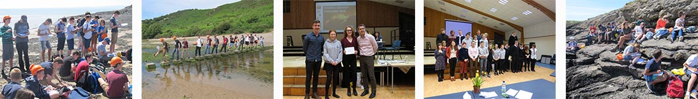

Geology is a science that provides an essential contribution to an understanding of the Earth and our Solar System. The subject centres on the study of minerals and rocks and the processes of their formation and distribution. Uniquely, it introduces the concept of geological time which, with the study of fossils and the rock record, enables a reconstruction of Earth and Planetary history.
It considers the nature of geological hazards and their management and a range of issues that affect people’s daily lives. Geology affects the environment we build, providing the resources for the building and manufacturing industries, the energy to fuel them and the environment for society’s waste. It is perhaps the most interdisciplinary and integrated of the sciences, providing a broad, scientifically relevant education.
Laboratory work and, particularly fieldwork, for all levels of ability, encourage accurate observation and analysis. These studies also develop a very wide range of skills that are transferable to many learning situations.
It is a subject that is intrinsically interesting and is suitable as a training for leisure. Once you have studied Geology you will never see the world in the same way again.
Additionally, we partake in the School's Geology Challenge annually. Please click the image below for information regarding our 2018 visit:
Courses available in the Geology Department:
GCSE AS/A2
If you require further information, please contact Mrs N Linforth, Departmental Leader.